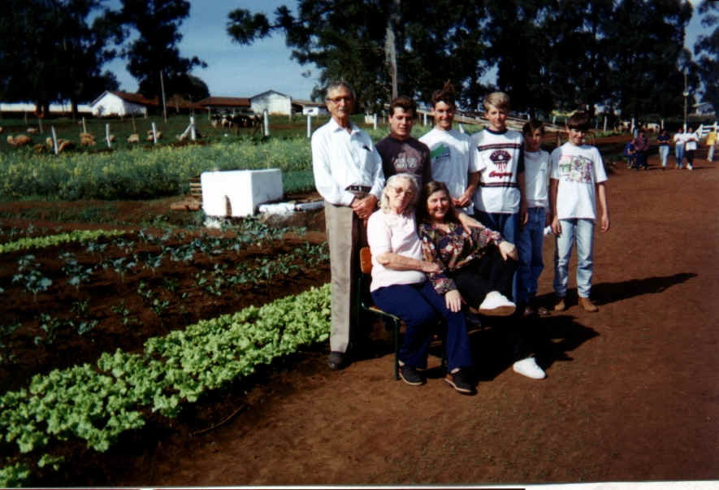

Olericultura

A horta do colégio conta com uma área de 1 ha. destinada ao cultivo de olerícolas,
que destinam-se a complementar a alimentação dos alunos e a comercialização da produção
excedente, os alunos desenvolvem atividades em seus horários de projetos orientados
trabalhando no preparo do solo, produção de mudas e cultivo de vegetais.
O sistemas de cultivo adotados são o sistema convencional e a plasticultura na forma
de estufas em túnel

1978
Estufa 1990

1994
1996
1996

2000
Estufa 2002

2003
MAPA DA HORTA
O presente mapa é resultado de um levantamento feito por GPS pelos alunos
Bruno Rickli Freire, Alencar Abreu Turco, Tiago Broeto, como parte da proposta
de utilização da horta no trabalho de conclusão do módulo de Elaboração de
Projetos do ensino técnico.